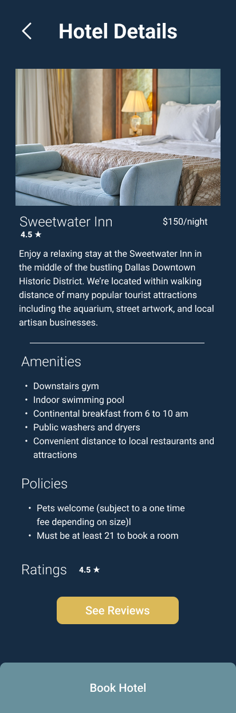
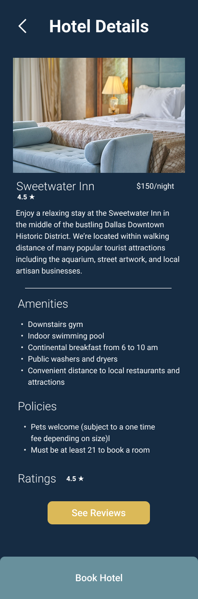
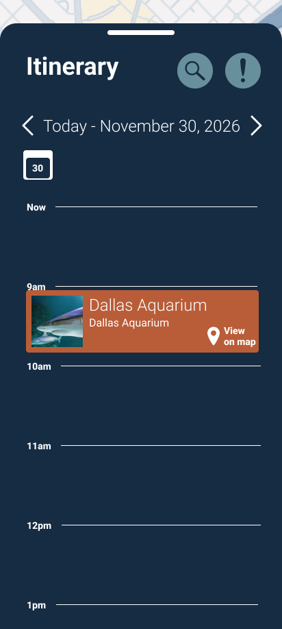
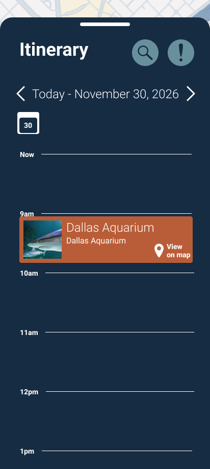
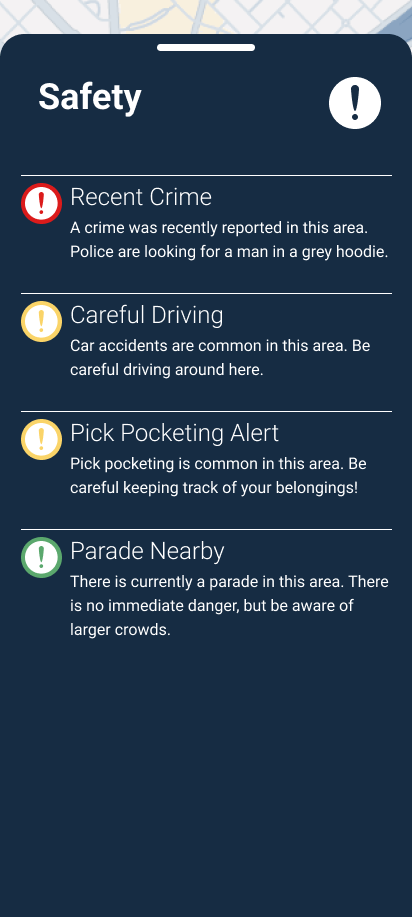
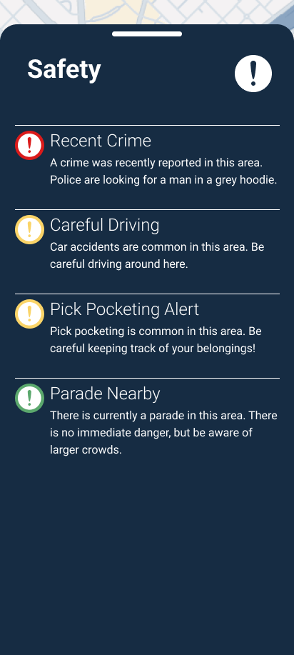

Journey Case Study
Role: UX Designer
Skills: Figma, User Interviews, Research, Testing
The Problem
The goal was to design an app to help both veteran and first-time solo travelers feel safe and confident while out on their solo adventures. It's important that the app is easy to use, and saves travelers' precious time, ensuring they get the most out of their experience living present in the world.
Empathis efine
User Interviews
I began by interviewing potential users for the app, prioritizing first-time solo travelers. From the first round of interviews, 5 main themes of users' priorities popped up: Solo Travel Appeal, Spontaneity, Finding Things to Do, Safety, and Room & Board.

From initial interviews, the number one pain point and deterrent from taking a solo trip was concerns around safety, especially for women.
"I feel like especially as a woman, knowing safe areas would be really important [...] Which areas should I try to avoid?" -Erin
Research
After interviewing potential users, I jumped into researching competitors. I did a quick lightning demos of some well known direct competitors, and some lesser known indirect competitors.
I noticed that most competitors specifically prioritized only one specific thing like hotel bookings, transportation, or attractions. Some had multiple features, but nothing really had it all. Most notably, I found that none of them had safety features, which was users' number one concern.
Ideate
Based on user interviews, I developed my user persona, Amie.
From there, I developed Amie's user journey map as she explores a new city. She's happiest while she's out exploring, but struggles navigating the city in a safe way and is frustrated needing multiple tabs open on her phone to keep track of her adventure.
Finally, I began designing solutions for the question of:
How might we help Amie navigate through her solo adventure feeling safe and confident?
Prototype
I began the design by focusing on 3 main task flows: Booking a Hotel, Adding Activities to the Itinerary, and Safety. All of these task flows are based around a bottom sheet to easily switch between looking at the map and any information related to it. The Hotel task flow would allow users to easily see where their hotel is on the map and in relation to other landmarks by switching between a map and a tab of more specific information that would slide over the map. It would also address the issue of availability by only showing hotels that are available in the user's specified time range. The Itinerary feature would allow users to browse local events and save them to their itinerary so they remember them later. The activities location can also be found on the map easily using the slidey tab. Finally, the safety icon on the map can toggle on and off to show safety notifications on the map.

Each of these main features is easily accessible from the home screen, with big clearly labeled buttons.
The main safety feature shows safety alerts for areas around town, also easy to see the alert and specific location by sliding the bottom sheet up and down.
Testing & Iteration
With a basic design sketched out, I built digital low fidelity wireframes and jumped into user testing.
Hotel Booking
For the first task flow I asked users to complete, many of them expressed the desire to filter hotel results by things like price, reviews, and proximity to certain landmarks, such as the interstate. One user also noted that the entire hotel task flow never once indicated the hotel's price, which is a massive oversight!
To address the pricing issue, I included the price on the hotel details page before the booking process starts.
 
I also added a page just to show the hotels pricing, fees, and policies.

To smooth out the entire task flow, I added a page to show current bookings before even beginning the hotel search, and fleshed out the booking confirmation page to show more details of the booking.

To allow for more personalized hotel results, I added a filter button on the hotel search screen, to indicate a filtering feature that would be included in a fully built version of the app.


Itinerary
My testing participants generally enjoyed the itinerary feature, although I did have one participant express confusion over it. She observed that it resembled the Google calendar feature, and instinctively wanted to use it in a similar way by manually adding events, instead of by searching for and finding events. The itinerary task flow didn't see a ton of revision in the high fidelity version, but I did add navigation to flip between other days in the itinerary.
 
If I were to revisit this project, there are definitely more revisions I would like to make to this workflow, but I'll expand on that later.
Safety
All test participants were very pleased with the safety feature! They found it very helpful to find safety information in their area. In the hi fi prototype I expanded on these features a little bit more and included a safety summary page before going to the map for users to see the total number of safety alerts and have easy access to buttons to search for other safety needs, such as medical care. From there, users can then access the map of safety alerts. The safety button on the map also acts as a toggle between safety alerts and activities from the itinerary.

 
Reflection
Overall this project got me to stretch my limits in UX Design thinking. It pushed me to consider how my designs would impact how a user engages with their surroundings in an unfamiliar city.
If I were to revisit this project again, there are a few features I would like to explore:
- More Flexible Itinerary: Implementing a less rigid design for the itinerary so that users can save events they're interested in, without committing to specific times, allowing for more spontaneity.
- Integrated Safety Tech: "A Quick Tap" emergency services button for travelers to contact local services.
- Transportation: Exploring more integrated options to keep track of flights and travel around a local area.
Working on Journey allowed me to explore giving users just the amount of information needed to feel confident instead of fearful on their solo adventures.